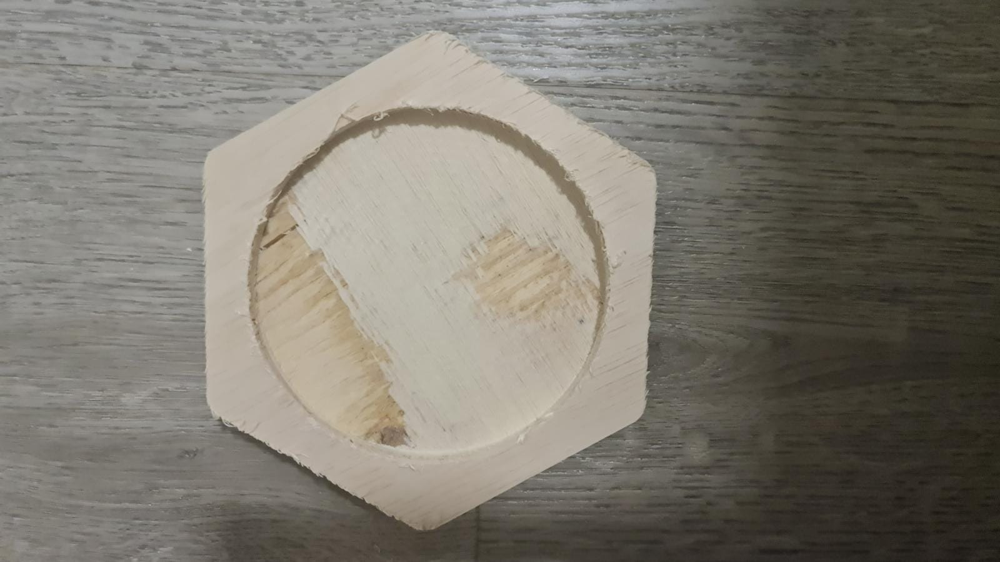

In this class, I leanrt how to use the 2D CNC Router. First I needed to instal a program called VcarvePro. Unfortunately, the version we need is paid so I could only install the trial version to practise with it. The paid program is provided in school when we need to use the machine. I also needed to learn how to calculate chip load as this will be how we decide the rpm for the endmill. The school uses a 6mm endmill and the rpm for it is 12000rpm with a feedrate of 1500 and a plunge rate of 600. I also had to learn with function to use when milling out my design. To cut the outside edges, we used profile milling and to cut a pocket, we used pocket milling. For profile milling, we also had to add tabs so that when the machine is doing its last cut, it does not fully cut the profile as the piece would move and get damaged. For this lesson, we were tasked to make a coaster as the competency test to use the machine. We needed to make the gcode to cut out the coaster. SO we made a profile and pocket milling operation. The pocket is milled to be 7mm deep. We also had to be sure that the pocket operation comes before the profile operation as the piece might move around after the profile has been milled and the pocket may be damaged when it it getting milded. Afterward, we used another program to move the machine around. We needed to screw in the plywood board to the table. For this function, we used a 12mm thick plywood board. We needed to screw all four corners to the table and if needed, we also need to screw the center of the sides down. This is to prevent the board from moving when it is getting milled. Then we had to set the Z using tool measure and manually set the X and Y using the program or the remote.When we want to start, we also need to turn on the dust collecter. After this is done, we can start the milling process. The finished product is shown below.
